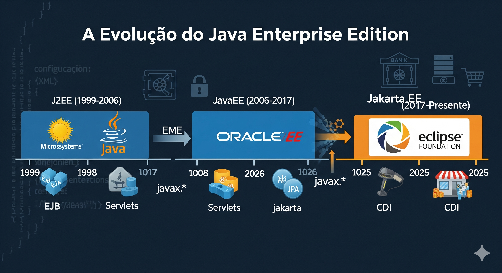

A Evolução do JavaEE para Jakarta EE: Impacto e Relevância em Sistemas Bancários e de Varejo

A Evolução do JavaEE para Jakarta EE
O universo do desenvolvimento empresarial Java passou por uma transformação significativa ao longo das últimas duas décadas. O que começou como J2EE (Java 2 Enterprise Edition) evoluiu para JavaEE (Java Enterprise Edition) e agora continua seu legado como Jakarta EE. Esta plataforma empresarial robusta continua sendo a espinha dorsal de inúmeros sistemas críticos, especialmente nos setores bancário e de varejo, onde confiabilidade, segurança e escalabilidade são requisitos fundamentais.
Neste artigo, exploraremos a jornada histórica desta tecnologia, entenderemos o que motivou sua transição para Jakarta EE, e analisaremos como ela permanece relevante no cenário atual de desenvolvimento de software corporativo, com foco especial em aplicações bancárias e de varejo.
A Trajetória Histórica: Do J2EE ao Jakarta EE
As Origens: J2EE (1999-2006)
No final da década de 1990, a Sun Microsystems reconheceu a necessidade de uma plataforma padronizada para o desenvolvimento de aplicações empresariais Java. Em dezembro de 1999, lançou o J2EE 1.2, que introduziu tecnologias fundamentais como:
- Enterprise JavaBeans (EJB)
- Java Servlets
- JavaServer Pages (JSP)
- Java Transaction API (JTA)
- Java Message Service (JMS)
O J2EE rapidamente se estabeleceu como uma solução robusta para aplicações distribuídas de grande escala, embora fosse criticado por sua complexidade e verbosidade. O EJB 1.0 e 2.0, em particular, eram conhecidos por sua curva de aprendizado íngreme e pela necessidade de código boilerplate extenso.
A Era do JavaEE (2006-2017)
Em 2006, com o lançamento do Java EE 5, a plataforma passou por uma reformulação significativa com ênfase na simplificação do desenvolvimento:
- Java EE 5 (2006): Introduziu anotações, EJB 3.0 simplificado, e Java Persistence API (JPA)
- Java EE 6 (2009): Trouxe o conceito de perfis, Contexts and Dependency Injection (CDI), e uma arquitetura mais modular
- Java EE 7 (2013): Focou em HTML5, WebSocket, JSON-P e melhorias em batch processing
- Java EE 8 (2017): A última versão sob a Oracle, com atualizações para JSON-B, JAX-RS 2.1, Servlet 4.0 com suporte a HTTP/2
Durante este período, o JavaEE se consolidou como uma plataforma madura e completa, adotada por grandes instituições financeiras e redes de varejo globais para construir seus sistemas críticos.
A Transição para Jakarta EE (2017-Presente)
Em 2017, a Oracle decidiu transferir o desenvolvimento do Java EE para a Eclipse Foundation, resultando em uma significativa mudança de marca:
- Setembro 2017: Oracle anuncia a transferência do Java EE para a Eclipse Foundation
- Fevereiro 2018: O projeto é renomeado para "Jakarta EE" após questões de marca registrada
- 2019: Jakarta EE 8 é lançado, mantendo compatibilidade com Java EE 8
- 2020: Jakarta EE 9 marca a grande transição de namespace, mudando de
javax.*parajakarta.* - 2021: Jakarta EE 10 oferece suporte para modernização com microserviços e integração com outras tecnologias
- 2023-2025: Atualizações contínuas focam em modernização, mantendo compatibilidade com sistemas legados
Esta transição representou mais que uma mudança de nome: significou um novo modelo de governança aberto, permitindo uma evolução mais rápida e alinhada às necessidades do mercado.
Jakarta EE Hoje: Componentes e Tecnologias Relevantes
O ecossistema Jakarta EE mantém e evolui diversos componentes que permanecem cruciais para o desenvolvimento corporativo:
Componentes Core
- Jakarta Persistence (anteriormente JPA): ORM padrão para acesso a banco de dados
- Jakarta Enterprise Beans (anteriormente EJB): Framework para componentes de negócios
- Jakarta Contexts and Dependency Injection (CDI): Sistema de injeção de dependência
- Jakarta RESTful Web Services (anteriormente JAX-RS): API para serviços REST
- Jakarta Transactions (anteriormente JTA): API para gerenciamento de transações
Implementações Populares
- WildFly (antigo JBoss): Servidor de aplicação da Red Hat
- GlassFish: Implementação de referência
- WebSphere Liberty: Servidor leve da IBM
- Payara Server: Fork empresarial do GlassFish
- TomEE: Servidor baseado em Tomcat com recursos Jakarta EE
Frameworks Complementares
- Spring Framework: Oferece integração com Jakarta EE
- MicroProfile: Extensão para desenvolvimento de microserviços
- Quarkus: Framework "Supersonic Subatomic Java" com suporte a Jakarta EE
Persistência do Jakarta EE no Setor Bancário
O setor bancário brasileiro e global continua sendo um dos maiores adotantes das tecnologias Jakarta EE, por razões estratégicas e técnicas:
Razões da Predominância
1. Segurança e Robustez Comprovadas
Os sistemas bancários demandam segurança extrema e estabilidade, áreas onde Jakarta EE tem um histórico comprovado de décadas. A plataforma oferece recursos integrados para:
- Controle de acesso granular
- Criptografia e protocolos seguros
- Gerenciamento transacional sólido
- Auditoria e rastreabilidade
2. Suporte a Transações Distribuídas
Os bancos geralmente operam com arquiteturas complexas onde a integridade transacional é crítica:
@Stateless
public class TransferenciaBancariaEJB {
@PersistenceContext
private EntityManager em;
@Resource
private UserTransaction utx;
@TransactionAttribute(TransactionAttributeType.REQUIRED)
public void realizarTransferencia(long contaOrigemId, long contaDestinoId,
BigDecimal valor) throws Exception {
ContaBancaria origem = em.find(ContaBancaria.class, contaOrigemId);
ContaBancaria destino = em.find(ContaBancaria.class, contaDestinoId);
// Validações...
// Operação atômica garantida pela transação JTA
origem.debitar(valor);
destino.creditar(valor);
// Registra operação para auditoria
RegistroTransacao log = new RegistroTransacao(origem, destino, valor);
em.persist(log);
}
}3. Integração com Sistemas Legados
Os bancos possuem sistemas que evoluíram por décadas, muitos deles construídos em Java:
- Suporte a conectores para mainframes (Jakarta Connectors)
- Serviços de mensageria para integração assíncrona (Jakarta Messaging)
- Interoperabilidade com COBOL e outros sistemas legados
4. Casos de Uso em Bancos Brasileiros
Grandes instituições financeiras brasileiras mantêm investimentos significativos em Jakarta EE:
- Banco do Brasil: Sistemas de internet banking e processamento de transações
- Itaú-Unibanco: Infraestrutura crítica de processamento bancário
- Caixa Econômica: Sistemas de benefícios sociais e processamento de loterias
- Santander Brasil: Plataformas de serviços bancários digitais
"Migramos gradualmente nossos sistemas para Jakarta EE, mantendo a compatibilidade com nossos EJBs legados. A mudança de namespace de javax para jakarta foi um desafio, mas os benefícios da governança aberta e do ritmo mais acelerado de inovação compensaram o esforço."
— Arquiteto sênior de um dos maiores bancos do Brasil
Jakarta EE no Varejo Moderno
O setor de varejo também se beneficia das capacidades do Jakarta EE, especialmente em:
Sistemas de Vendas Omnichannel
As grandes redes varejistas precisam integrar lojas físicas, e-commerce, marketplaces e aplicativos móveis:
@Path("/estoque")
@ApplicationScoped
public class GerenciadorEstoqueResource {
@Inject
private EstoqueService service;
@GET
@Path("/{produtoId}/disponibilidade")
@Produces(MediaType.APPLICATION_JSON)
public Response verificarDisponibilidade(@PathParam("produtoId") long produtoId,
@QueryParam("lojaId") Long lojaId) {
DisponibilidadeProduto disponibilidade;
if (lojaId != null) {
// Verifica estoque na loja específica
disponibilidade = service.verificarDisponibilidadeLoja(produtoId, lojaId);
} else {
// Verifica estoque em todas as lojas e centro de distribuição
disponibilidade = service.verificarDisponibilidadeGlobal(produtoId);
}
return Response.ok(disponibilidade).build();
}
@POST
@Path("/reserva")
@Consumes(MediaType.APPLICATION_JSON)
@Produces(MediaType.APPLICATION_JSON)
public Response reservarProduto(ReservaProdutoRequest request) {
// Lógica transacional para reserva de produtos
ReservaProduto reserva = service.reservarProduto(
request.getProdutoId(),
request.getQuantidade(),
request.getLojaId(),
request.getClienteId()
);
return Response.status(Response.Status.CREATED)
.entity(reserva)
.build();
}
}Gerenciamento de Grande Volume de Dados
Varejistas como Magazine Luiza, Via Varejo e Americanas utilizam Jakarta EE para:
- Processamento de milhões de pedidos diários
- Sistemas de recomendação e personalização
- Gerenciamento de catálogos com milhões de SKUs
- Integração com fornecedores e marketplaces
Exemplos de Implementações no Varejo Brasileiro
- Magazine Luiza: Sistemas de gestão de estoque e pedidos
- B2W Digital: Plataforma de e-commerce unificada
- Grupo Pão de Açúcar: Sistemas de fidelidade e CRM
- Lojas Renner: Infraestrutura omnichannel
"Nossa arquitetura combina microserviços modernos com sistemas core em Jakarta EE. Utilizamos EJBs e JPA para componentes críticos de negócio como processamento de pedidos e gestão financeira, enquanto adotamos APIs REST para integrações externas e front-ends."
— Diretor de tecnologia de uma grande rede varejista brasileira
Desafios e Estratégias de Modernização
Organizações que utilizam Jakarta EE enfrentam desafios específicos na era da computação em nuvem:
Desafios Comuns
1. Footprint de Memória e Startup
- Servidores tradicionais podem ser pesados para arquiteturas baseadas em nuvem
- Tempo de inicialização mais lento comparado a soluções nativas para nuvem
2. Integração com Arquiteturas de Microserviços
- Decomposição de monólitos EJB
- Balanceamento entre centralização transacional e distribuição de serviços
3. Curva de Aprendizado para Novos Desenvolvedores
- Geração mais recente de desenvolvedores menos familiarizada com Java EE/Jakarta EE
- Concorrência de frameworks mais novos com menor curva de aprendizado
Estratégias de Modernização
As organizações têm adotado abordagens pragmáticas para evoluir seus sistemas Jakarta EE:
1. Abordagem "Strangler Fig"
- Encapsular gradualmente funcionalidades do monolito em serviços modernos
- Manter o núcleo transacional em Jakarta EE enquanto se expõe APIs modernas
2. Adoção de MicroProfile
- Complementar Jakarta EE com extensões MicroProfile para microserviços
- Utilizar implementações como Quarkus ou Helidon para melhor performance em nuvem
3. Modernização In-Place
- Migrar de EJBs pesados para CDI mais leve
- Adotar padrões modernos de design mantendo a infraestrutura Jakarta EE
4. Containerização
- Empacotar aplicações Jakarta EE em contêineres
- Utilizar Kubernetes para gerenciamento de aplicações Jakarta EE
// Exemplo de modernização com CDI e Configuration
@ApplicationScoped
public class ConfiguracoesModernasService {
@Inject
@ConfigProperty(name = "service.timeout", defaultValue = "30000")
private long timeout;
@Inject
@ConfigProperty(name = "feature.nova-precificacao.ativa", defaultValue = "false")
private boolean novaPrecificacaoAtiva;
@Inject
private Logger logger;
@Inject
private MetricsRegistry metrics;
public Preco calcularPreco(Produto produto, Cliente cliente) {
Timer.Context timerContext = metrics.timer("calcular-preco").time();
try {
if (novaPrecificacaoAtiva) {
logger.info("Usando novo algoritmo de precificação para {}", produto.getSku());
return algoritmoNovoPrecificacao.calcular(produto, cliente);
} else {
return algoritmoLegadoPrecificacao.calcular(produto, cliente);
}
} finally {
timerContext.stop();
}
}
}O Futuro: Jakarta EE e a Nuvem
O futuro do Jakarta EE está sendo moldado por sua adaptação à computação em nuvem:
Jakarta EE Cloud Native
A comunidade Jakarta EE está focada em tornar a plataforma mais adequada para ambientes de nuvem:
- Otimizações de Performance: Redução de footprint de memória e tempo de startup
- Modelo Reativo: Suporte a programação reativa para melhor escalabilidade
- Configuração Externalizada: Configuração dinâmica baseada em ambiente
- Observabilidade: Melhores ferramentas para monitoramento e diagnóstico
Integrações com Ecossistemas Modernos
Jakarta EE está evoluindo para integrar-se melhor com:
- Kubernetes e Operadores: Facilidade de deployment em orquestradores de contêineres
- Serverless: Adaptações para modelos de computação sem servidor
- Arquiteturas Orientadas a Eventos: Melhor suporte para padrões de mensageria modernos
- DevOps e CI/CD: Ferramentas para facilitar pipelines modernos de entrega
Conclusão
Jakarta EE continua sendo uma tecnologia fundamental no desenvolvimento de software corporativo, especialmente nos setores bancário e de varejo, onde a combinação de robustez, segurança e suporte a transações complexas é essencial. Sua evolução de J2EE para Java EE e agora Jakarta EE demonstra uma notável capacidade de adaptação, mantendo-se relevante em um cenário tecnológico em constante mudança.
As organizações que investiram pesadamente em JavaEE encontram em Jakarta EE um caminho claro para modernização gradual, permitindo que aproveitem seus investimentos existentes enquanto adotam paradigmas mais modernos. Para os desenvolvedores, compreender esta plataforma continua sendo uma habilidade valiosa, especialmente para aqueles que trabalham com sistemas críticos no setor financeiro e de varejo.
A transição para a Eclipse Foundation e o novo nome Jakarta EE marcam não o fim, mas um renascimento desta plataforma empresarial, agora com uma governança mais aberta e um foco renovado em adaptação para os desafios da computação moderna.
Tecnologias mencionadas: Jakarta EE, Java EE, J2EE, EJB, JPA, CDI, JAX-RS, JTA, WildFly, WebSphere, MicroProfile, Quarkus